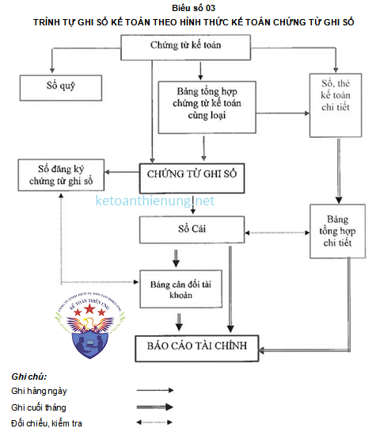
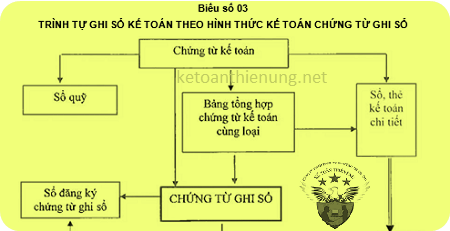

Hướng dẫn cách ghi sổ theo hình thức kế toán Chứng từ ghi sổ theo Thông tư 200 và 133: Đặc trưng, trình tự ghi sổ, nội dung, kết cấu và phương pháp ghi sổ theo hình thức Chứng từ ghi sổ.
1) Đặc trưng của ghi sổ theo hình thức Chứng từ ghi sổ:
- Căn cứ trực tiếp để ghi sổ kế toán tổng hợp là “Chứng từ ghi sổ”. Việc ghi sổ kế toán tổng hợp bao gồm:
- Ghi theo trình tự thời gian trên Sổ Đăng ký Chứng từ ghi sổ.
- Ghi theo nội dung kinh tế trên Sổ Cái.
Chứng từ ghi sổ do kế toán lập trên cơ sở từng chứng từ kế toán hoặc Bảng Tổng hợp chứng từ kế toán cùng loại, có cùng nội dung kinh tế. Chứng từ ghi sổ được đánh số hiệu liên tục trong từng tháng hoặc cả năm (theo số thứ tự trong Sổ Đăng ký Chứng từ ghi sổ) và có chứng từ kế toán đính kèm, phải được kế toán trưởng duyệt trước khi ghi sổ kế toán.
Hình thức kế toán Chứng từ ghi sổ gồm có các loại sổ kế toán sau:
+ Chứng từ ghi sổ;
+ Sổ Đăng ký Chứng từ ghi sổ;
+ Sổ Cái;
+ Các Sổ, Thẻ kế toán chi tiết.
2) Trình tự ghi sổ kế toán theo hình thức Chứng từ ghi sổ:
+) Hàng ngày hoặc định kỳ:
- Căn cứ vào các chứng từ kế toán hoặc Bảng Tổng hợp chứng từ kế toán cùng loại đã được kiểm tra, được dùng làm căn cứ ghi sổ, kế toán lập Chứng từ ghi sổ. Căn cứ vào Chứng từ ghi sổ để ghi vào sổ Đăng ký Chứng từ ghi sổ, sau đó được dùng để ghi vào Sổ Cái. Các chứng từ kế toán sau khi làm căn cứ lập Chứng từ ghi sổ được dùng để ghi vào Sổ, Thẻ kế toán chi tiết có liên quan.
+) Cuối tháng:
- Phải khoá sổ tính ra tổng số tiền của các nghiệp vụ kinh tế, tài chính phát sinh trong tháng trên sổ Đăng ký Chứng từ ghi sổ, tính ra Tổng số phát sinh Nợ, Tổng số phát sinh Có và Số dư của từng tài khoản trên Sổ Cái. Căn cứ vào Sổ Cái lập Bảng Cân đối tài khoản.
- Sau khi đối chiếu khớp đúng, số liệu ghi trên Sổ Cái và Bảng tổng hợp chi tiết (được lập từ các sổ, thẻ kế toán chi tiết) được dùng để lập Báo cáo tài chính. Quan hệ đối chiếu, kiểm tra phải đảm bảo Tổng số phát sinh Nợ và Tổng số phát sinh Có của tất cả các tài khoản trên Bảng Cân đối số phát sinh phải bằng nhau và bằng Tổng số tiền phát sinh trên sổ Đăng ký Chứng từ ghi sổ. Tổng số dư Nợ và Tổng số dư Có của các tài khoản trên Bảng Cân đối số phát sinh tài khoản phải bằng nhau, và số dư của từng tài khoản trên Bảng Cân đối số phát sinh phải bằng số dư của từng tài khoản tương ứng trên Bảng tổng hợp chi tiết.
+) Sơ đồ hình thức ghi sổ Chứng từ ghi sổ:

3. Nội dung, kết cấu và phương pháp ghi sổ theo hình thức Chứng từ ghi sổ
(1) Sổ Đăng ký chứng từ ghi sổ (Mẫu số S02b-DN):
a) Nội dung:
- Sổ Đăng ký chứng từ ghi sổ là sổ kế toán tổng hợp dùng để ghi chép các nghiệp vụ kinh tế phát sinh theo trình tự thời gian (Nhật ký). Sổ này vừa dùng để đăng ký các nghiệp vụ kinh tế phát sinh, quản lý chứng từ ghi sổ, vừa để kiểm tra, đối chiếu số liệu với Bảng Cân đối số phát sinh tài khoản.
b) Kết cấu và phương pháp ghi chép:
Cột A: Ghi số hiệu của Chứng từ ghi sổ.
Cột B: Ghi ngày, tháng lập Chứng từ ghi sổ.
Cột 1: Ghi số tiền của Chứng từ ghi sổ.
Cuối trang sổ phải cộng số luỹ kế để chuyển sang trang sau.
Đầu trang sổ phải ghi số cộng trang trước chuyển sang.
Cuối tháng, cuối năm, kế toán cộng tổng số tiền phát sinh trên Sổ Đăng ký chứng từ ghi sổ, lấy số liệu đối chiếu với Bảng Cân đối số phát sinh tài khoản.
(2) Sổ Cái (Mẫu số S02c1-DN và S02c2- DN)
a) Nội dung:
- Sổ Cái là sổ kế toán tổng hợp dùng để ghi các nghiệp vụ kinh tế phát sinh theo tài khoản kế toán được quy định trong chế độ tài khoản kế toán áp dụng cho doanh nghiệp.
- Số liệu ghi trên Sổ Cái dùng để kiểm tra, đối chiếu với số liệu ghi trên Bảng tổng hợp chi tiết hoặc các Sổ (thẻ) kế toán chi tiết và dùng để lập Bảng cân đối số phát sinh tài khoản và Báo cáo Tài chính.
b) Kết cấu và phương pháp ghi Sổ Cái:
- Sổ Cái của hình thức kế toán Chứng từ ghi sổ được mở riêng cho từng tài khoản. Mỗi tài khoản được mở một trang hoặc một số trang tuỳ theo số lượng ghi chép các nghiệp vụ kinh tế phát sinh nhiều hay ít của từng tài khoản.
Sổ Cái có 2 loại: Sổ Cái ít cột và Sổ Cái nhiều cột.
+ Sổ Cái ít cột: thường được áp dụng cho những tài khoản có ít nghiệp vụ kinh tế phát sinh, hoặc nghiệp vụ kinh tế phát sinh đơn giản.
Kết cấu của Sổ Cái loại ít cột (Mẫu số S02c1-DN)
- Cột A: Ghi ngày, tháng ghi sổ.
- Cột B, C: Ghi số hiệu, ngày, tháng của Chứng từ ghi sổ.
- Cột D: Ghi tóm tắt nội dung nghiệp vụ kinh tế phát sinh.
- Cột E: Ghi số hiệu tài khoản đối ứng.
- Cột 1, 2: Ghi số tiền ghi Nợ, ghi Có của tài khoản này.
+ Sổ Cái nhiều cột: thường được áp dụng cho những tài khoản có nhiều nghiệp vụ kinh tế phát sinh, hoặc nghiệp vụ kinh tế phát sinh phức tạp cần phải theo dõi chi tiết có thể kết hợp mở riêng cho một trang sổ trên Sổ Cái và được phân tích chi tiết theo tài khoản đối ứng.
Kết cấu của Sổ Cái loại nhiều cột (Mẫu số S02c2-DN)
- Cột A: Ghi ngày, tháng ghi sổ.
- Cột B, C: Ghi số hiệu, ngày, tháng của Chứng từ ghi sổ.
- Cột D: Ghi tóm tắt nội dung nghiệp vụ kinh tế phát sinh.
- Cột E: Ghi số hiệu tài khoản đối ứng.
- Cột 1, 2: Ghi tổng số tiền phát sinh Nợ, phát sinh Có của tài khoản này.
- Cột 3 đến cột 10: Ghi số tiền phát sinh bên Nợ, bên Có của các tài khoản cấp 2.
* Phương pháp ghi Sổ Cái:
- Căn cứ vào Chứng từ ghi sổ để ghi vào Sổ Đăng ký chứng từ ghi sổ, sau đó Chứng từ ghi sổ được sử dụng để ghi vào Sổ Cái và các sổ, thẻ kế toán chi tiết liên quan.
- Hàng ngày, căn cứ vào Chứng từ ghi sổ để ghi vào Sổ Cái ở các cột phù hợp.
- Cuối mỗi trang phải cộng tổng số tiền theo từng cột và chuyển sang đầu trang sau.
- Cuối tháng, (quý, năm) kế toán phải khoá sổ, cộng số phát sinh Nợ, số phát sinh Có, tính ra số dư và cộng luỹ kế số phát sinh từ đầu quý, đầu năm của từng tài khoản để làm căn cứ lập Bảng Cân đối số phát sinh tài khoản và Báo cáo tài chính.
Trên đây là những quy định về cách ghi sổ kế toán theo hình thức Chứng từ ghi sổ, ngoài ra các bạn có thể xem thêm: Cách làm sổ sách kế toán trên Excel
Kế toán Diệu Tâm chúc các bạn thành công.
__________________________________________________
